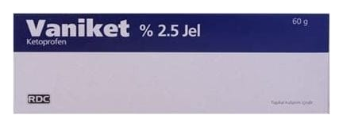

Vaniket %2.5 JEL,60 g

Ne için kullanılır
KT · Bölüm 1VANİKET, cilt üzerine uygulanan, saydam, renksiz, yumuşak jel formunda bir ilaçtır. Her 1 gram jelde 25 mg ketoprofen içerir. Aşağıdaki hastalıkların lokal tedavisinde analjezik ve antiinflamatuvar olarak etkilidir: • Osteoartrit (harabiyete bağlı eklem iltihabı), periartrit (yumuşak doku iltihabı), tendinit (kasları kemiklere bağlayan tendonların iltihaplı durumu), tenosinovit (tendon ve eklem içi sıvının iltihaplı durumu) ve bursit (eklem bölgesindeki boşluklu yapıların iltihaplı durumu) gibi romatizmal hastalıklar, • Ezilme ve burkulma gibi yumuşak doku hasarları, • Ağrı, inflamasyon ve kas gerginliği ile kendini gösteren kas iskelet sistemi hastalıkları. 1/7
VANİKET, 60 gramlık tüp içeren ambalajlarda sunulmaktadır. VANİKET’in etki mekanizması ya da size neden bu ilacın reçete edildiği ile ilgili herhangi bir sorunuz varsa doktorunuza sorunuz.